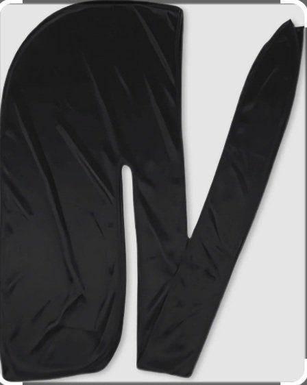
Q&A BASICSilky vs Velvet Durag — Which One for Waves?
Silky satin-weave is the standard training fabric; velvet is the grip alternative with the most compression. Both train waves — the choice is grip, season, and feel.
Guides, routines and fixes from the culture — 105 posts and counting, from your first tie to elite-level training. Most guides carry a verified video from a real creator in the game, credited in full; Q&A guides answer straight from the guides.
Showing 17 of 102 guides

The guides below are now grouped by product type, so each category leads somewhere real instead of sitting in one long list:
Your questions, answered — no question is a dumb question. 2 Q&A guides.

Q&A BASICSilky satin-weave is the standard training fabric; velvet is the grip alternative with the most compression. Both train waves — the choice is grip, season, and feel.
Seam out, front edge level, tails flat and never twisted, knot at the back. The standard tie in five steps — plus the three mistakes that ruin more ties than anything else.
Start here — the fundamentals. 46 guides.
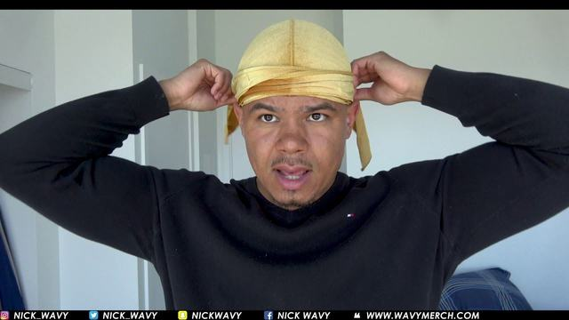
Tying & Basics BASICSeam out, tails level, knot on the strings — the standard tie that holds 360s together.
First durag, first tie — what to buy, how it should feel, and the tie itself, slowed right down.
The daytime tie is different from the sleep tie — here's how to keep it sharp for hours.
Stretch first, dome second — the two-move technique that makes a wave cap actually work.
Adjustable compression vs set-and-forget convenience — the honest head-to-head.
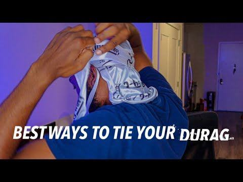
Wave Training BASICCut, brush, wash, compress, repeat — the whole beginner system on one page.
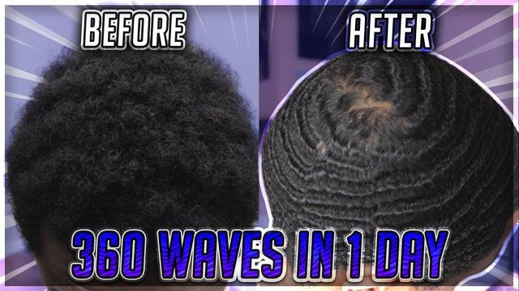
Wave Training BASICA reset day that makes trained waves pop in hours — and honest talk about what it can't do.
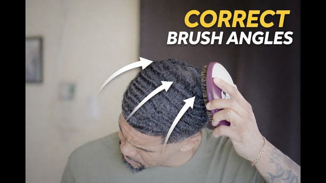
Brushing BASICTop forward, sides angled, back down — the angle map every waver needs memorised.
Warm-up, sections, crown, finish — a full session template with real timings.
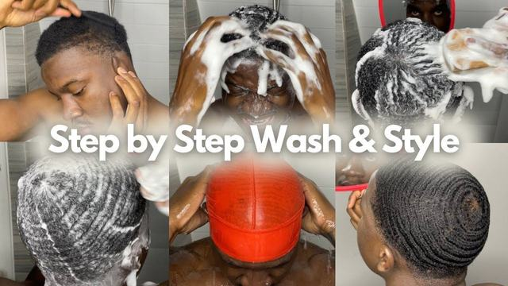
Wash & Hair Care BASICShampoo with the brush, never your hands — the complete wash-day system, start to finish.
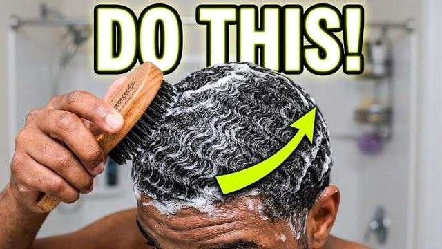
Wash & Hair Care BASICFirst wash day? One shampoo, one conditioner, one brush — the simplified version that works.
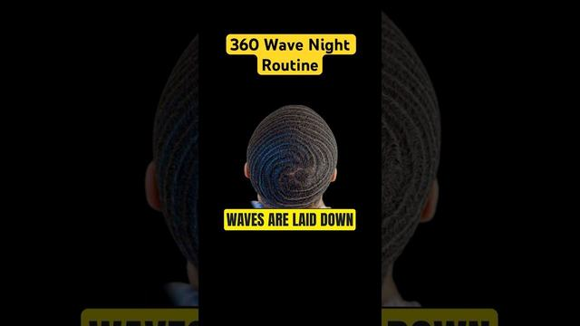
Routines BASICBrush, check, tie, sleep — the 10-minute night routine that guards a full day of progress.
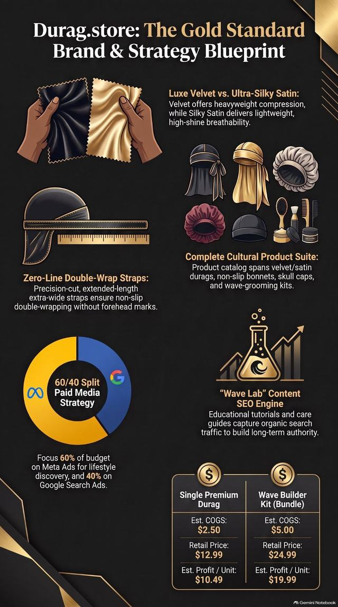
Wash & Hair Care BASICRead the label like a waver: cleansing without stripping, slip without coating.
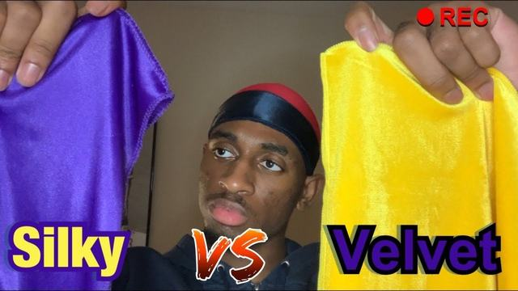
Materials & Fabrics BASICSilky shines and slides, velvet grips and hugs — the full fabric comparison, no hype.
Fabric, tails, seam, stretch — the four things that decide a wave durag, ranked honestly.
Sixty-second quality checks: the stitch test, the tail measure, and the fit checks that expose cheap builds.
Ten seconds, five checkpoints — know instantly whether a durag fits your head or fights it.
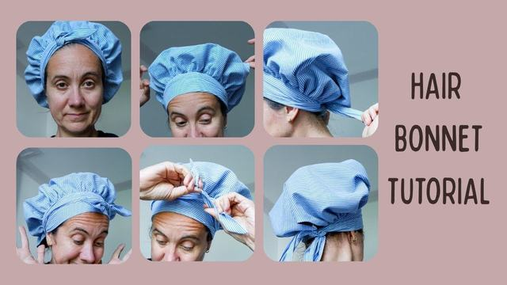
Bonnets BASICCompression shapes, room protects — the overnight choice depends on what your hair needs tonight.
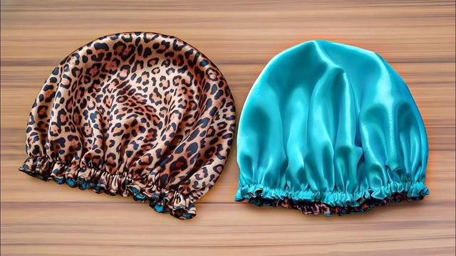
Bonnets BASICIf your bonnet is on the pillow by 3 a.m., it's a fit problem, not a you problem — here's the fix list.
Hair in first, band behind the ears, room to spare — the correct bonnet routine in three moves.
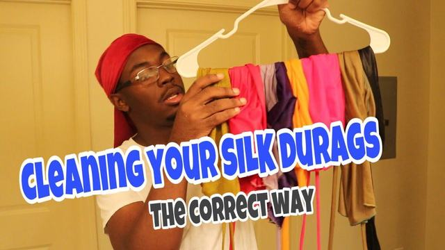
Bonnets BASICYour bonnet touches your hair 8 hours a night — keep it clean and its elastic alive with this care routine.
The set-and-forget compressor, fully explained — fit, layering, rotation, and when to retire a cap.
Helmet hair is optional — the layer system that keeps compression working under anything you put on.
Baby locs unravel at night if you let them — the gentle protection routine for the fragile phase.
Mist, separate, cover, release — the mature-loc night system in four calm moves.
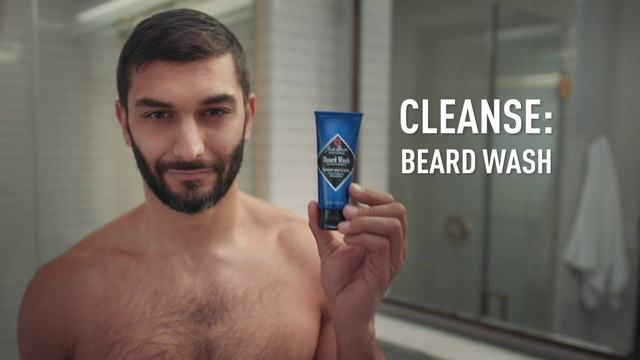
Beard Care BASICWash, condition, oil, brush — the four steps, in order, that separate a kept beard from a grown one.
Drops, not drizzles — oil is skin care first, and the damp-beard application changes everything.
Soft brush, short sessions, zero pressure — wave training scaled for kids, with the patience built in.
Delicate hair, gentle protection — fit, fabric and safety rules for the littlest crowns.
Four directions, one mirror, five minutes — turning brush time into a skill your kid owns.
Cool water, gentle hands, flat dry — the silk-durag wash that keeps the shine alive for months.
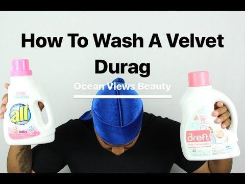
Durag Care BASICVelvet's pile is the product — wash it without matting, dry it without crushing, keep the grip alive.
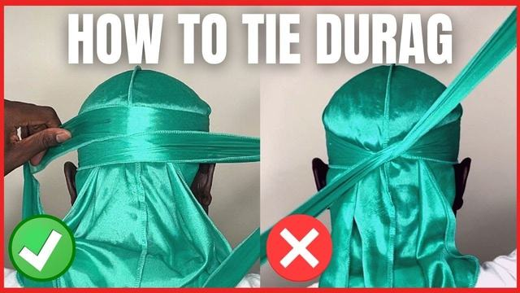
Troubleshooting BASICThe morning line has five possible causes — find yours and it never comes back.
Sweat, friction, and headgear vs your pattern — the gym-day system that loses nothing.
Sharp waves read professional anywhere — the presentation playbook for offices, interviews and formal floors.
Fifteen focused minutes and a nightly tie — the minimum dose that keeps a pattern alive through your busiest season.
Black first, one signature colour second, prints last — the colour rotation that never misses.
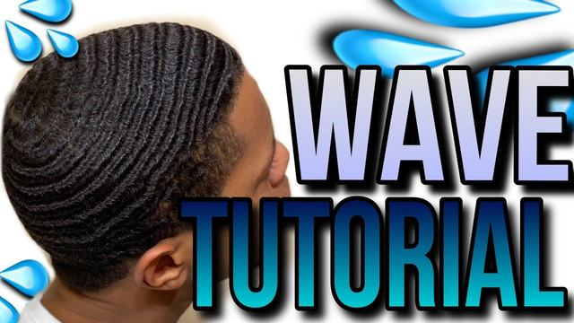
Routines BASICShared bathrooms, tight money, brutal timetables — waves anyway. The student's complete system.
Cut day is a system, not an errand. The full barbershop-day routine, from the night before to the second day after.
The pomade aisle is four different products wearing one name. The families, the trade-offs, and your pick.
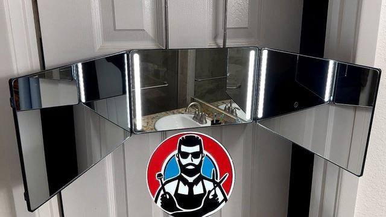
Buying Guides BASICYou cannot fix what you cannot see. The three-way mirror buyer's guide for wavers who train their crown and back panels.
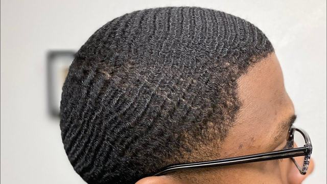
Routines BASICFlights, hotels and strange bathrooms — your pattern can survive all of it with one small bag and a plan.
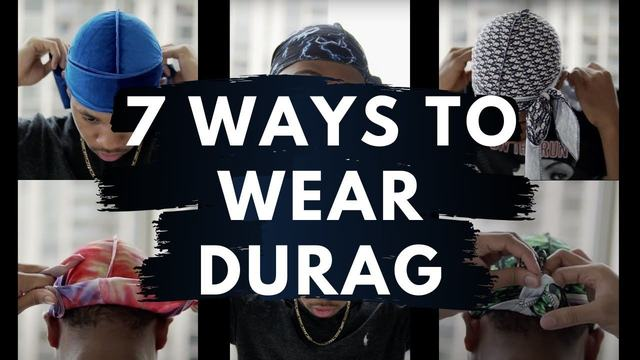
Styling & Culture BASICBurgundy for December, gold for the celebration. Holiday durag styling that looks festive and intentional — never novelty.
Real silk and polyester satin look similar and behave differently — feel, breath, shine, grip, wash care and price. Which one fits your hair and your routine.
Cold wash, inside out, air dry: the full care routine for knit and fleece balaclavas, plus how to handle odour, pilling and stretched elastic.
New durags arrive stiff from finishing. Wash first, wear it in around the house, and let the tails and seams soften — the first-week routine that makes a new durag feel like yours.
Level up — methods, materials and fixes. 46 guides.
All the compression, none of the knot pressure — the tuck-based tie for line-free mornings.
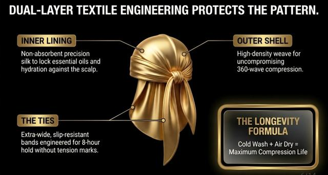
Brushing INTERMEDIATEHard builds, medium trains, soft finishes — the three-brush system made simple.
Your back is half your pattern — mirror training makes every stroke back there deliberate.
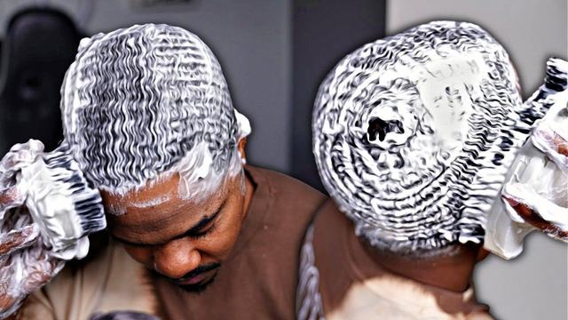
Brushing INTERMEDIATEThe comb lifts what the brush lays — detailing sessions for definition and connection work.
Find the true centre, isolate it, train it — crown work for a pattern that connects 360°.
All the training on top, clean fade below — the 180 pattern for the tapered look.
Yes, with a longer runway — the adjusted routine for hair that doesn't curl tightly.
Your pattern survives wash day if every touch pushes it the right way — here's the protocol.
The untie matters as much as the tie — plus the 5-minute lift that brings waves back to life.
Pea-sized, not palm-sized — the light-hand product method and the reset for when you've overdone it.
The coolest-wearing fabric in the lineup — where mesh wins big and where it honestly can't compete.
One size rarely fits all — the numbers behind a durag that fits at week one and week six of a wolf.
Constant, even, no-tie pressure — where elastic compression genuinely beats a tied durag.
Two layers, one system — how stacking durags multiplies hold, and when it's more than you need.
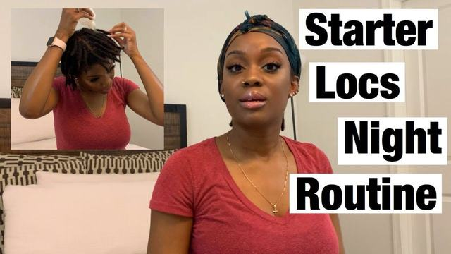
Locs & Dreadlock Care INTERMEDIATELength needs room and hold at once — the double-coverage system for loc wearers.
Braids and length need capacity, not compression — loading long styles into a bonnet the right way.
Thinner, lower, closer — the skull cap's job under helmets, hats and hard days.
Jumbo room, satin inside, band off the edges — the full dreadlock cap brief.
Clean scalp, fully rinsed, dried to the core — the loc wash that leaves nothing behind.
Slow damage is still damage — the seven habits quietly thinning, drying and dulling locs everywhere.
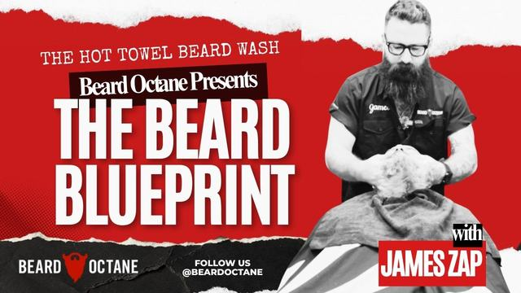
Beard Care INTERMEDIATEHeat, wash, cold close — the barbershop ritual that makes a beard feel brand new, done at home.
Winter steals moisture from both ends — the seasonal routine that keeps a beard soft through the cold.
Your beard spends 8 hours rubbing a pillow too — the night routine and coverage for beards with length.
Rotation, gentle ties, right washes — the small habits that separate a 3-month durag from a 12-month one.
A drawer system that keeps every piece clean, shaped and findable — plus the travel version.
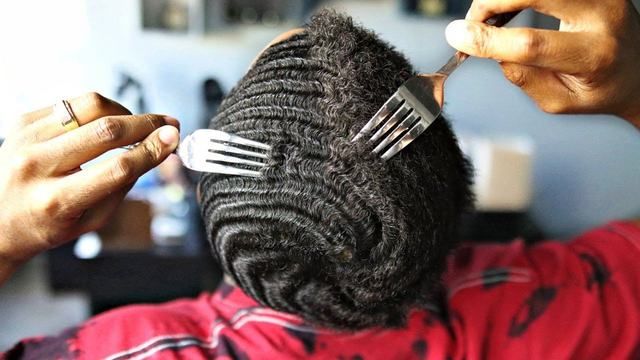
Troubleshooting INTERMEDIATEForks are angle errors with a memory — the diagnosis and the patient correction routine.
Your weak side is a logbook of your habits — read it, then rebalance with targeted sessions.
Half of 'dandruff' under waves is product buildup in disguise — diagnose first, then fix the right problem.
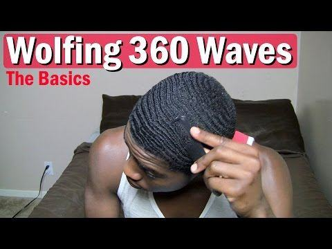
Troubleshooting INTERMEDIATELost progress is rarely lost training — the pattern remembers, and this plan wakes it back up.
Connections fail in four places for four reasons — match the gap to its fix and stop guessing.
The wolf is where patterns deepen — managing weeks of growth without losing the lay or your mind.
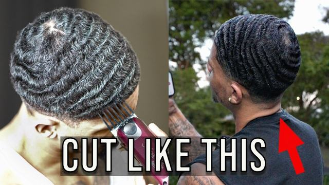
Barber & Cuts INTERMEDIATEThe cut can build the pattern or erase it — the exact instructions to give your barber.
Chlorine strips, salt dries, sun fades — the summer protocol that keeps a pattern alive through swim season.
The durag is an accessory with rules — match the fabric to the formality, the colour to the fit.
Sublimation vs screen print, panel art that survives the tie, and the checks that separate premium prints from peeling ones.
A century of headwear history: labour roots, wave culture, bans, runways — and what the durag has always meant.
From album covers to the GRAMMYs stage — how hip-hop carried the durag from the barbershop to the world.
The wave check, the forums, the lingo, the mentors — the community operating system behind every pattern.
A durag at a wedding can be the sharpest look in the room — if you style it like you mean it. The formal playbook.
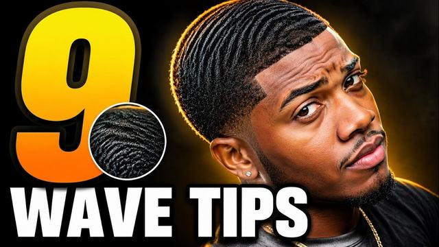
Styling & Culture INTERMEDIATEThe camera eats wave depth for breakfast. Here is how to feed it properly — prep, light and angles for photo day.
Your shift ends when the world wakes up. Your wave routine runs on shift time — here is the inverted system that works.
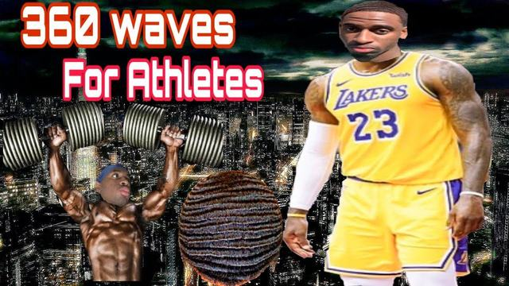
Routines INTERMEDIATEPractice, sweat and helmets versus your pattern. The athlete's system for keeping waves through a full season.
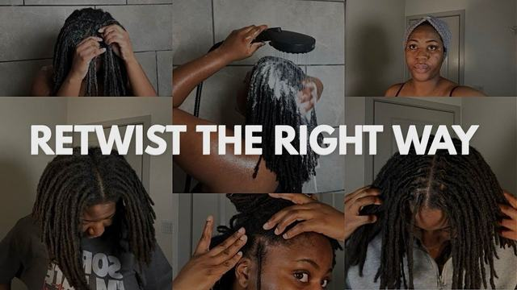
Locs & Dreadlock Care INTERMEDIATERetwist day is loc care's main event. The full at-home sequence — wash, retwist, dry, protect — done in the right order.
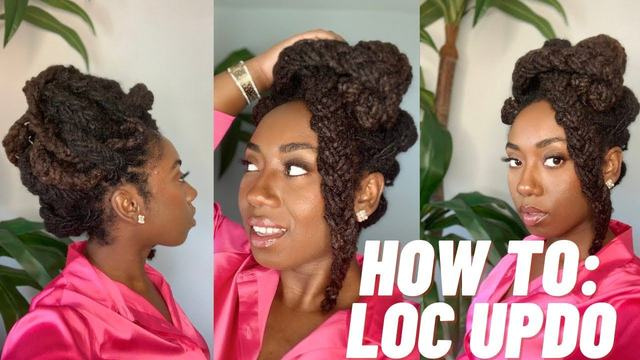
Locs & Dreadlock Care INTERMEDIATEUp for the day, protected at night. Loc updo styling plus the cap system that keeps the style alive past bedtime.
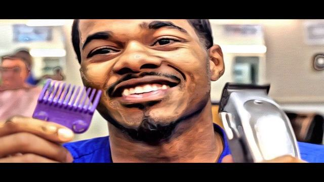
Barber & Cuts INTERMEDIATETwenty minutes in the chair can erase eight weeks of wolfing. The exact conversation that protects your pattern.
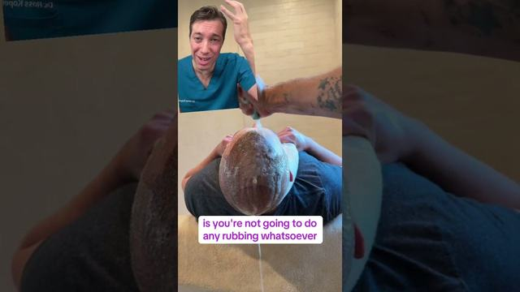
Wash & Hair Care INTERMEDIATEA transplant is an investment your routine must protect, not rush. General care principles — with your surgeon in charge.
Advanced — maximum depth, maximum discipline. 11 guides.
Same discipline, new geometry — the 540 pattern and the angle shift that creates it.
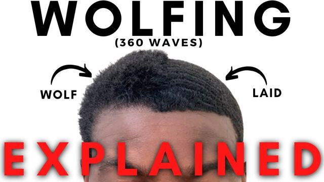
Wave Training EXTREMETwo full rotations around the head — the rarest pattern in the game, and the wolf it takes.
Every wolf has a peak — past it, length starts eating the pattern it built. Know your signs.
Four weeks or twelve? Your curl diameter decides — the ranges by texture and the signs that end a wolf early.
Waves are physics plus patience: what compression actually does to hair, explained properly.
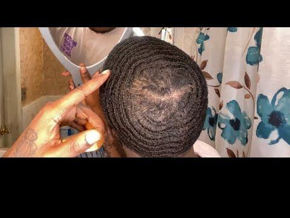
Wave Training EXTREMECoarse hair resists everything — and rewards everything. The full playbook for the strongest texture in the game.
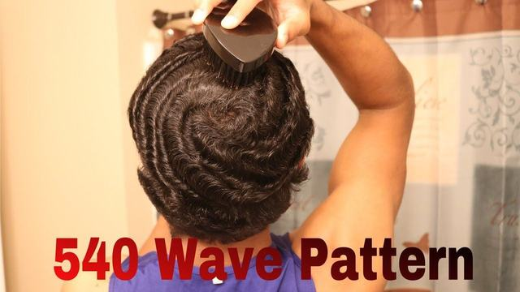
Wave Training EXTREMENo natural curl? The 540 is still within reach — here is the honest, complete method for straight hair.
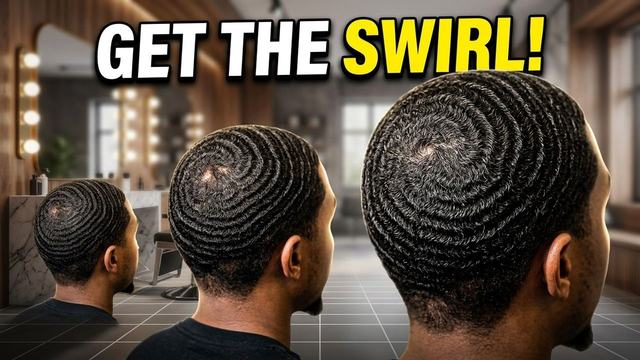
Troubleshooting EXTREMEThe crown is where patterns go to die — and where they can be rebuilt. The full advanced repair protocol.
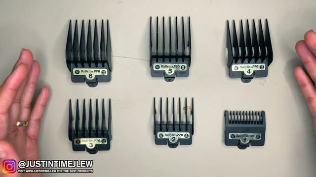
Barber & Cuts EXTREMEA guard number is a pattern decision. The complete guide to clipper grades for every wave pattern.
Contest day is won in the three days before it. The complete 72-hour wave check preparation protocol.
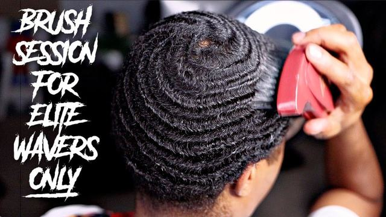
Brushing EXTREMEThe mirror got you started. Pattern memory takes you elite. The drills for brushing perfectly without looking.